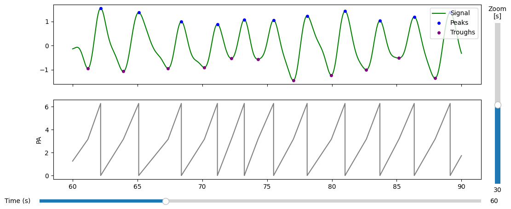
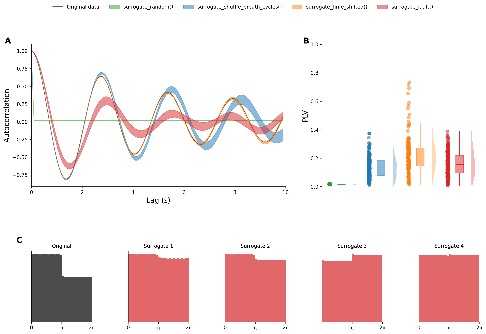

Generating surrogate data for inference#
There are many ways to generate surrogate data for inference. Here we introduce and compare several methods. What is important to note is that the surrogate data should be generated in a way that preserves the null hypothesis. For example, if we are testing for a specific pattern in the data, the surrogate data should not contain that pattern. This means, that the choise of surrogate data depends on the hypothesis being tested. Furthermore, it can depend on how phase angles are extracted from the data, as different methods for extracting phase angles can lead to different distributions of phase angles.
In the following we will introduce several methods for generating surrogate data, and discuss their advantages and disadvantages.
[40]:
import pickle as pkl
from scipy.stats import sem
import numpy as np
import matplotlib.pyplot as plt
import matplotlib.gridspec as gridspec
from tqdm import tqdm
from pyriodic.preproc import RawSignal, Pipeline
from pyriodic.surrogate import surrogate_uniform, surrogate_shuffle_breath_cycles, surrogate_time_shifted, surrogate_random, surrogate_iaaft, extract_phase_angles_surrogate_ts
from pyriodic.viz import plot_phase_diagnostics
from pyriodic.datasets import sample
Preprocessing of the data to obtain observed phase angles#
First, we will preprocess the data to obtain the observed phase angles. This is done by applying a preprocessing pipeline to the raw signal, which includes filtering, peak detection, and phase extraction. To avoid long processing times, we will use a subset of the data for this tutorial (4 minutes of data).
[4]:
preproc_pipeline = (
Pipeline() \
.add(RawSignal.filter_bandpass , low=0.1, high=1.0) \
.add(RawSignal.smoothing, window_size=500) \
.add(RawSignal.zscore) \
)
[5]:
path = sample.data_path()
with open(path, "rb") as f:
data = pkl.load(f)
resp_ts, sfreq, behav_data = data["resp_ts"], data["sfreq"], data["behav_data"]
event_samples, event_ids, labels= behav_data["event_samples"], behav_data["event_ids"], behav_data["event_type"]
[ ]:
# # only keep 4 minutes of data, starting from the first event sample
start_sample = event_samples[0]
n_samples = int(sfreq * 60 * 4)
resp_ts = resp_ts[start_sample:start_sample+n_samples]
# remove rejected indices from the the event samples
event_samples = [event-start_sample for event in event_samples]
target_event_samples = [
samp for samp, label in zip(event_samples, labels) if "target" in label
]
# check that they are below the length of the raw signal
target_event_samples = [samp for samp in target_event_samples if samp < len(resp_ts)]
[8]:
raw = RawSignal(resp_ts, sfreq)
# apply preprocessing pipeline
raw = preproc_pipeline.apply(raw)
PA, peaks, troughs = raw.phase_twopoint(prominence=0.1)
PA_onepoint, peaks_onepoint = raw.phase_onepoint(prominence=0.1)
plot = plot_phase_diagnostics(
{"PA": PA},
start = 60,
window_duration = 30,
fs = raw.fs,
data = raw.ts,
peaks=peaks,
troughs=troughs
)

Comparing different methods#
Different surrogate methods preserve different aspects of the underlying signal; temporal dynamics, spectral characteristics, or phase distribution, while aiming at removing any systematic relationship between the events of interest and the respiratory phase.
[12]:
surrogates = {} # creating an empty dictionary to store the surrogate data for each method for later comparison
n_surrogates = 200 # low number of surrogates for speed, but should be increased for actual analysis
The first method we will introduce is the uniform surrogate method, which generates surrogate phase angles by sampling from a uniform distribution. This method preserves the distribution of phase angles (if the observed phase angles are uniformly distributed, which is the case for one-point phase extraction), but does not preserve any temporal dynamics or spectral characteristics of the underlying signal.
[13]:
surr_uniform = surrogate_uniform(
n_surrogate = n_surrogates,
events = len(target_event_samples),
)
In the case where the distribution of the phase angles for the observed data is not uniform (e.g., if the twopoint method was used to estimate the phase angles), the uniform surrogate method will not preserve the distribution of the phase angles. In this case, it is recommended to use a surrogate method that preserves the distribution of the phase angles. One example is the surrogate random method, which generates surrogate phase angles by randomly sampling from the observed phase angles. This method preserves the distribution of the phase angles, but does not preserve any temporal dynamics or spectral characteristics of the underlying signal.
[31]:
surrogates[surrogate_random.__name__ + "()"] = surrogate_random(
n_surrogate = n_surrogates,
phase_pool = PA,
events = len(target_event_samples),
return_ts = True
)
[19]:
surrogates[surrogate_time_shifted.__name__ + "()"] = surrogate_time_shifted(
phase_pool=PA,
events=target_event_samples,
return_ts=True,
n_surrogate=n_surrogates,
)
Generating null samples with time shifts...
[20]:
surrogates[surrogate_shuffle_breath_cycles.__name__ + "()"] = surrogate_shuffle_breath_cycles(
phase_pool=PA,
events=target_event_samples,
return_ts=True,
n_surrogate=n_surrogates,
)
100%|██████████| 200/200 [00:00<00:00, 1349.40it/s]
Generated 200 surrogate time series by shuffling breathing cycles.
Another approach for generating surrogate distributions is the iterated amplitude-adjusted Fourier transform. The algorithm generates surrogate time series that preserve the amplitude distribution and the power spectrum of the original time series. For more information see Berther (preprint). The IAAFT is applied on the raw respiration time course data, which means that for each of the surrogate time courses the phase angles then need to be extracted afterwards. Therefore it takes a bit more code than the other methods. First, we generate surrogate time courses:
[ ]:
surr_ts = surrogate_iaaft(resp_ts, n_surrogate=n_surrogates, verbose=True)
And then the phase angles are extracted from the surrogate time courses using the same preprocessing pipeline as for the observed data.
[21]:
surrogates[surrogate_iaaft.__name__ + "()"] = extract_phase_angles_surrogate_ts(
surr_ts,
target_event_samples,
preproc_pipeline=preproc_pipeline,
fs=sfreq,
return_phase_ts=True
)
Estim100%|██████████████████████████████| 200/200 [33:51<00:00, 10.16s/it]
[22]:
def circular_autocorr(phases, lag):
z1 = np.exp(1j * phases[:-lag])
z2 = np.exp(1j * phases[lag:])
return np.real(np.nanmean(z1 * np.conj(z2)))
[36]:
dat_for_plot = {}
lags_sec = np.arange(0, 10, 0.1)
lags = (lags_sec * raw.fs).astype(int)
# -------- ORIGINAL --------
autocorrs = []
for lag in lags:
if lag == 0:
autocorrs.append(1)
else:
autocorrs.append(circular_autocorr(PA, lag))
dat_for_plot["original"] = (lags_sec, np.array(autocorrs), None, None)
# -------- SURROGATES --------
for method_name, (surrogate_phase_angles, surrogate_phase_ts) in surrogates.items():
print(f"Computing autocorrelation for surrogate method: {method_name}")
mean_ac = []
sem_ac = []
std_ac = []
for lag in tqdm(lags):
if lag == 0:
mean_ac.append(1)
sem_ac.append(0)
std_ac.append(0)
continue
lag_corrs = [
circular_autocorr(surr, lag)
for surr in surrogate_phase_ts
]
lag_corrs = np.array(lag_corrs)
mean_ac.append(np.nanmean(lag_corrs))
sem_ac.append(sem(lag_corrs, nan_policy='omit'))
std_ac.append(np.nanstd(lag_corrs))
dat_for_plot[method_name] = (
lags_sec,
np.array(mean_ac),
np.array(sem_ac),
np.array(std_ac)
)
Computing autocorrelation for surrogate method: surrogate_random()
100%|██████████| 100/100 [02:29<00:00, 1.50s/it]
Computing autocorrelation for surrogate method: surrogate_shuffle_breath_cycles()
100%|██████████| 100/100 [02:01<00:00, 1.21s/it]
Computing autocorrelation for surrogate method: surrogate_time_shifted()
100%|██████████| 100/100 [01:43<00:00, 1.03s/it]
Computing autocorrelation for surrogate method: surrogate_iaaft()
100%|██████████| 100/100 [02:00<00:00, 1.21s/it]
[37]:
plv_for_plot = {}
for method_name, data in surrogates.items():
print(f"Computing PLV for surrogate method: {method_name}")
_, surr_PA_ts = data
plvs = []
for i, tmp_surr in enumerate(surr_PA_ts):
tmp_PA = PA.copy()
# get indices of the surrogate phase angle time series that are nan
plvs.append (np.abs(np.nanmean(np.exp(1j * (tmp_PA - tmp_surr)))))
plv_for_plot[method_name] = (plvs, np.mean(plvs), sem(plvs), np.std(plvs))
Computing PLV for surrogate method: surrogate_random()
Computing PLV for surrogate method: surrogate_shuffle_breath_cycles()
Computing PLV for surrogate method: surrogate_time_shifted()
Computing PLV for surrogate method: surrogate_iaaft()
[38]:
colormap = plt.get_cmap("tab10")
colors = {
"original": "black",
"surrogate_shuffle_breath_cycles()": colormap(0),
"surrogate_time_shifted()": colormap(1),
"surrogate_random()": colormap(2),
"surrogate_iaaft()": colormap(3)
}
[39]:
fig = plt.figure(figsize=(16, 10), dpi=300)
n_histograms = 5 # number of surrogate histograms to plot
gs = gridspec.GridSpec(
nrows=2,
ncols=n_histograms,
figure=fig,
width_ratios=[1] * n_histograms,
height_ratios=[2, 1],
hspace=0.6,
wspace=0.6
)
# Top row
ax_ac = fig.add_subplot(gs[0, :3])
ax_plv = fig.add_subplot(gs[0, 3:])
# Bottom row: one histogram per surrogate
hist_axes = [fig.add_subplot(gs[1, i]) for i in range(n_histograms)]
# =============================================================================
# Autocorrelation plot
# =============================================================================
for method_name, data in dat_for_plot.items():
lags_sec = data[0]
mean_ac = data[1]
sem_ac = data[2]
std_ac = data[3]
print(f"Plotting autocorrelation for method: {method_name}")
if method_name == "original":
z_order = 1
color = "black"
linewidth = 1
alpha = 1
ax_ac.plot(
lags_sec,
mean_ac,
label="Original data",
color=color,
linewidth=linewidth,
zorder=z_order,
alpha=alpha,
)
else:
# avoid plotting artefacts at lag 0
sem_ac[0] = sem_ac[1]
std_ac[0] = std_ac[1]
z_order = 0
color = colors[method_name]
alpha = 0.5
ax_ac.fill_between(
lags_sec,
mean_ac - std_ac,
mean_ac + std_ac,
alpha=alpha,
label=method_name,
color=color,
)
ax_ac.set_xlabel("Lag (s)")
ax_ac.set_ylabel("Autocorrelation")
ax_ac.set_xlim([0, 10])
# =============================================================================
# PLV plot
# =============================================================================
alpha = 0.5
for method_name, data in plv_for_plot.items():
if method_name == "original":
continue
color = colors[method_name]
box_plot_pos = [list(plv_for_plot.keys()).index(method_name)]
scatter_pos_x = box_plot_pos[0] - 0.3
violin_pos = box_plot_pos[0] + 0.3
# -------------------------------------------------------------------------
# Scatter
# -------------------------------------------------------------------------
x_offset = 0.02
x = [scatter_pos_x] * len(data[0])
x = [xi + np.random.uniform(-x_offset, x_offset) for xi in x]
ax_plv.scatter(
x,
data[0],
alpha=alpha,
color=color,
)
# -------------------------------------------------------------------------
# Boxplot
# -------------------------------------------------------------------------
ax_plv.boxplot(
data[0],
positions=box_plot_pos,
widths=0.2,
patch_artist=True,
showmeans=False,
meanline=False,
showcaps=False,
showfliers=False,
medianprops=dict(color=color),
boxprops=dict(
facecolor=color,
color=color,
alpha=alpha,
),
whiskerprops=dict(color=color),
)
# -------------------------------------------------------------------------
# Violin
# -------------------------------------------------------------------------
vplot = ax_plv.violinplot(
data[0],
positions=[violin_pos],
widths=0.2,
showmeans=False,
showextrema=False,
showmedians=False,
side="high",
)
vplot["bodies"][0].set_facecolor(color)
ax_plv.set_ylabel("PLV")
ax_plv.set_ylim([0, 1])
ax_plv.set_xticks([])
ax_plv.spines["bottom"].set_visible(False)
# =============================================================================
# Surrogate phase-angle histograms
# =============================================================================
hist_method = "surrogate_iaaft()" # <-- change if desired
_, surr_PA_ts = surrogates[hist_method]
for i, ax in enumerate(hist_axes):
if i == 0:
ax.set_title("Original", fontsize=10)
ax.hist(
PA,
bins=30,
density=True,
color=colors["original"],
alpha=0.7,
)
else:
ax.set_title(f"Surrogate {i}", fontsize=10)
ax.hist(
surr_PA_ts[i-1],
bins=30,
density=True,
color=colors[hist_method],
alpha=0.7,
)
ax.set_xlim([0, 2*np.pi])
ax.set_xticks([0, np.pi, 2*np.pi])
ax.set_xticklabels(["0", "π", "2π"])
ax.set_yticks([])
# =============================================================================
# Styling
# =============================================================================
all_axes = [ax_ac, ax_plv] + hist_axes
for ax in all_axes:
ax.spines["top"].set_visible(False)
ax.spines["right"].set_visible(False)
ax.yaxis.label.set_size(14)
ax.xaxis.label.set_size(14)
# =============================================================================
# Shared legend
# =============================================================================
handles, labels = ax_ac.get_legend_handles_labels()
fig.legend(
handles,
labels,
loc="upper center",
ncol=len(labels),
frameon=False,
)
ax_ac.text(
-0.08, 1.05, "A",
transform=ax_ac.transAxes,
fontsize=16,
fontweight="bold",
va="top",
ha="right",
)
ax_plv.text(
-0.08, 1.05, "B",
transform=ax_plv.transAxes,
fontsize=16,
fontweight="bold",
va="top",
ha="right",
)
hist_axes[0].text(
-0.15, 1.2, "C",
transform=hist_axes[0].transAxes,
fontsize=16,
fontweight="bold",
va="top",
ha="right",
)
#plt.tight_layout(rect=[0, 0, 1, 0.93])
plt.show()
Plotting autocorrelation for method: original
Plotting autocorrelation for method: surrogate_random()
Plotting autocorrelation for method: surrogate_shuffle_breath_cycles()
Plotting autocorrelation for method: surrogate_time_shifted()
Plotting autocorrelation for method: surrogate_iaaft()
